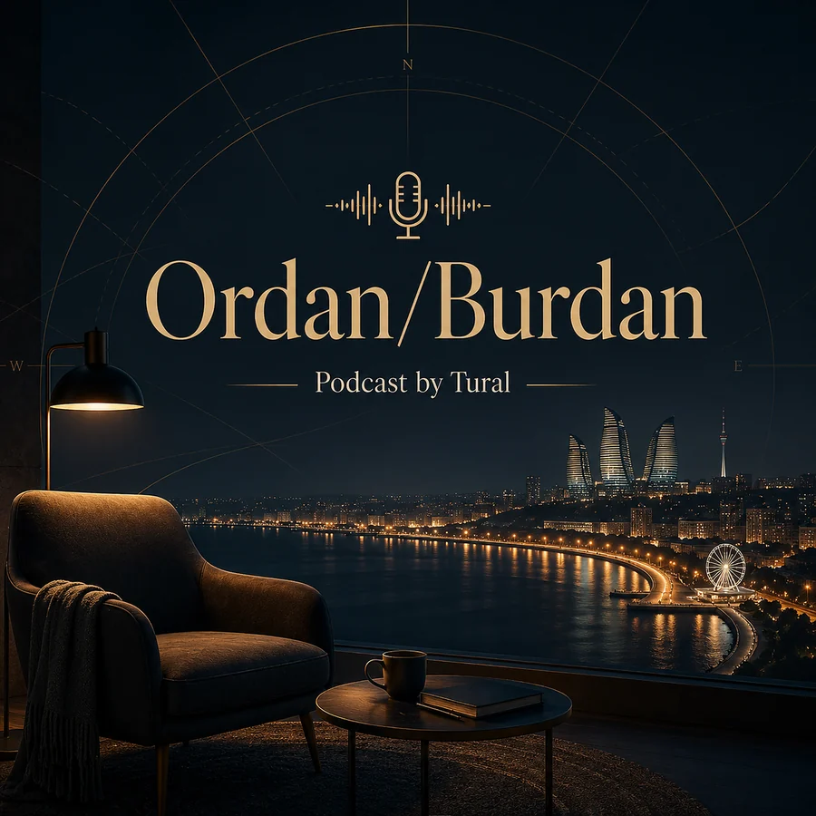

Münasibətlər
İnsanların bir-birinə necə yaxınlaşdığı, necə uzaqlaşdığı və münasibətlərdə təkrarlanan davranışlar.
Podcast by Tural daxilində geniş düşüncə seriyası
Gündəlik həyatın içində gördüyümüz, hiss etdiyimiz, amma çox vaxt açıq danışmadığımız mövzular haqqında söhbətlər.

Nə üçün bu seriya?
Ordan/Burdan münasibətlər, insan davranışı, şəxsi inkişaf, intizam, seçimlər və həyatın müxtəlif tərəflərinə daha real və düşünülmüş baxmaq üçündür.
Məqsəd hər mövzuda hazır cavab vermək deyil. Məqsəd daha yaxşı sual qoymaq, davranışların arxasındakı səbəbi görmək və gündəlik həyatda daha aydın düşünməyə kömək etməkdir.
Əsas sual
Sadəcə nə baş verdi yox — niyə belə oldu?
Bu seriya “hər şeydən bir az” deyil. Bu, həyatın müxtəlif tərəflərinə eyni diqqətlə baxmaqdır: davranış, seçim, münasibət, məsuliyyət və insanın özü ilə söhbəti.
Mövzu istiqamətləri
Bu seriya böyüdükcə arxiv yalnız buraxılış siyahısı kimi yox, həyatın müxtəlif tərəflərinə açılan düşüncə xəritəsi kimi qurulacaq.
İnsanların bir-birinə necə yaxınlaşdığı, necə uzaqlaşdığı və münasibətlərdə təkrarlanan davranışlar.
Verdiyimiz qərarların, qaçdığımız həqiqətlərin və təkrarladığımız səhvlərin arxasındakı səbəblər.
Şəxsi sərhədlər, özünə hörmət, xarakter, emosional nəzarət və insanın özü ilə münasibəti.
Motivasiya bitəndən sonra insanı davam etdirən sistemlər, vərdişlər və məsuliyyət.
Ambisiya, yorğunluq, müqayisə, böyümək, pul, karyera və gündəlik həyatın tempi.
Normal qəbul etdiyimiz davranışlara, sosial gözləntilərə və şəhər həyatının xırda siqnallarına daha diqqətli baxış.
Söhbət qapıları
Bu xətt gələcəkdə sevgi, hörmət, bağlanma, məsafə, gözlənti və emosional yetkinlik kimi mövzular üçün əsas istiqamətlərdən biri olacaq.
Buradan başla
Arxiv hələ böyüyür, amma bu buraxılışlar Ordan/Burdan xəttinin tonunu göstərir: praktik, müşahidəli və gündəlik həyata bağlı.
“Bu seriyanın məqsədi hazır cavablar vermək deyil. Məqsəd hiss etdiyimiz, amma çox vaxt ifadə edə bilmədiyimiz şeyləri sözə çevirməkdir.”
Ordan/Burdan daha çox sual, müşahidə və düşüncə üzərində qurulur. Burada sürətli nəticə yox, mövzunun dərinliyinə dürüst baxış önəmlidir.